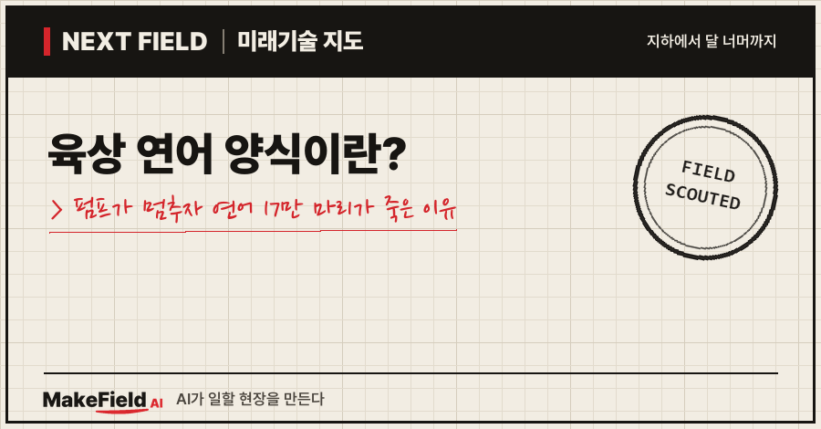
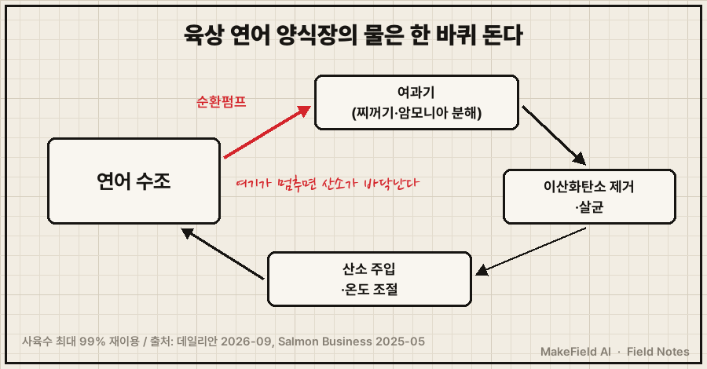
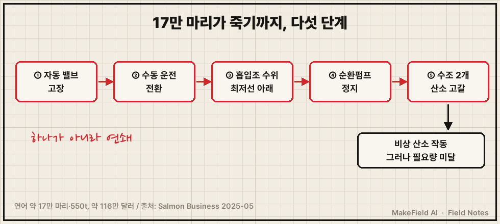
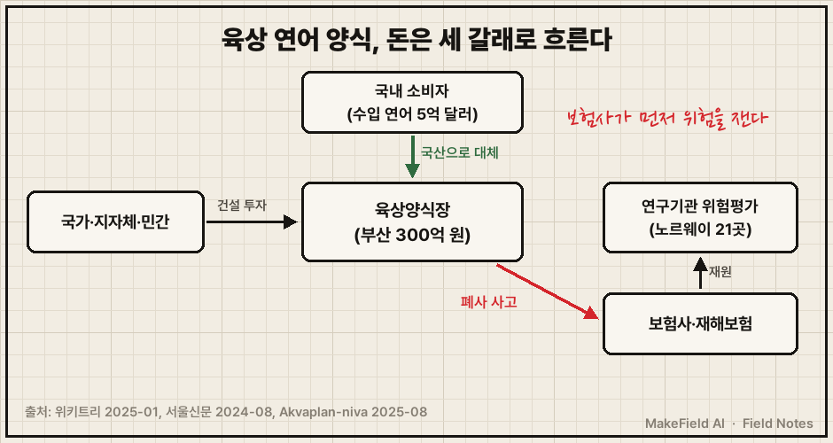

바다 가두리가 아니라 육지 위 실내 수조에서 연어를 키우는 시대가 한국에도 왔어요. 2026년 9월 부산에서 국산 육상 연어가 처음 출하됐습니다. 그런데 공개된 대형 폐사 사례를 보면, 시작은 밸브·펌프·필터 같은 기계 고장이었어요.
한 줄 요약: 육상 연어 양식은 물을 여과·산소 주입하며 다시 쓰는 실내 수조(RAS)에서 연어를 키우는 방식이고(부산 시설은 사육수 최대 99% 재이용), 2025년 일본의 한 육상양식장에서는 밸브 고장 뒤 순환펌프가 멈춰 연어 약 17만 마리(출하량 550t)가 폐사했다(Salmon Business 2025-05, 데일리안 2026-09).
이 글은 2026년 11월 기준 공개 자료로 이 양식 방식이 무엇인지, 왜 지금 한국에서 커지는지, 돈은 누가 내고 누가 버는지, 그리고 왜 노르웨이 보험사가 양식장 위험평가에 직접 돈을 댔는지 차례로 풀어 봅니다.
1. 육상 연어 양식이란 무엇인가요
육상 연어 양식이란 바다 대신 육지 건물 안 수조에 물을 채우고, 그 물을 거르고 산소를 넣어 계속 돌려 쓰면서 연어를 키우는 방식이다. 바다 날씨나 수온과 떨어져 있으니, 물 상태를 사람이 정해 줄 수 있어요.
💡 RAS(순환여과 양식) — 수조 물을 버리지 않고 여과기·살균기·산소 공급 장치를 거쳐 다시 수조로 돌려보내는 양식 시설. 어항 여과기를 공장 크기로 키운 셈이다.
부산 기장군 시설은 "폐쇄식 순환여과양식시스템(RAS)"으로 사육수를 최대 99%까지 다시 쓰고, 여름에도 수온을 연어에게 맞는 12~16°C로 유지한다고 밝혔어요(데일리안 2026-09).

그림을 글로 옮기면, 수조 물은 순환펌프를 타고 여과기 → 이산화탄소 제거·살균 → 산소 주입·온도 조절을 거쳐 다시 수조로 돌아와요. 이 고리가 한 군데라도 끊기면 물속 산소가 빠르게 줄어듭니다. 그래서 육상양식장은 '물고기용 생명유지 장치'에 가깝습니다.
2. 왜 지금 한국에서 육상 연어 양식이 뜨나요
한국이 사 먹는 연어는 거의 전부 수입인데, 그 수입액이 10년 만에 4배 가까이 늘었기 때문이다. 수입을 국산으로 바꾸려는 시설이 2024~2026년에 잇달아 생기고 있어요.
연어 수입액은 2013년 1억 3,649만 달러에서 2023년 5억 528만 달러로 늘었고, 수산물 수입 총액(62억 1,649만 달러)의 7.9%로 품목 1위였어요(서울신문 2024-08).
| 지역 | 시설(예시) | 확인된 내용 | 출처 |
|---|---|---|---|
| 부산 기장 | 부산 스마트양식 클러스터(운영: 에코아쿠아팜) | 총 300억 원(국비 150억·시비 90억·민간 60억), 2027년부터 연 500t, 2026-09-30 첫 출하 선포식 | 위키트리 2025-01, 데일리안 2026-09 |
| 경북 포항 | 연어 스마트 양식 클러스터 | 연 1,000t 규모로 2023년 11월부터 조성, 민간투자 시 연 1만t 기대 | 서울신문 2024-08 |
| 경북 포항 | 미래아쿠아팜(장기면) | 2026-04-27 노르웨이 리로이 씨푸드(세계 3위 연어 생산기업)와 협력 간담회 | 쿠키뉴스 2026-04 |
| 충남 당진 | 간척지 순환여과 시설 | 13억 원·1,600㎡, 연 50t 목표 | 서울신문 2024-08 |
💡 스마트 양식 클러스터 — 정부·지자체가 양식 시설과 연구·가공 시설을 한곳에 모아 짓는 단지. 자동 수질 관리 같은 설비가 기본으로 들어간다.
3. 사고는 어떻게 일어나나요 — 일본 17만 마리 폐사의 순서
육상양식의 큰 폐사는 대개 '장비 하나 고장 → 다음 장비 정지 → 산소 고갈'처럼 연쇄로 일어난다. 일본에서 육상 연어를 키우는 Proximar Seafood의 2025년 사고가 대표 사례예요.
Salmon Business(2025-05)가 전한 회사 발표는 이렇습니다. 야간 수조 채우기 작업 중 자동 밸브가 고장 나 수동 운전으로 바꿨고, 펌프 흡입조 수위가 최저선 아래로 떨어지면서 순환펌프가 멈췄어요. 그 결과 수조 2개의 산소가 고갈됐고, 비상 산소 장치가 작동했지만 필요한 산소량을 대지 못했습니다.
💡 펌프 흡입조(섬프) — 펌프가 물을 빨아들이는 작은 물통. 물이 너무 낮아지면 펌프가 공기를 빨아 고장 나지 않도록 자동으로 멈추게 해 둔다.
결과는 연어 약 17만 마리, 출하량 기준 550t 손실이었고, 손실액은 약 1,200만 노르웨이 크로네(약 116만 달러)였어요. 회사는 원인을 "인적 오류와 절차 위반"으로 발표했고, 비상 장치가 왜 제 몫을 못 했는지는 내부 조사에 들어갔다고 밝혔습니다. 약 200t은 회수할 수 있어 순손실은 350t으로 줄어들 것으로 봤어요(Salmon Business 2025-05). 회사가 그해 예상한 출하량이 약 3,000t이었으니, 550t은 한 해 물량의 약 18%입니다(단순 계산).

그림을 글로 정리하면 ① 자동 밸브 고장 → ② 수동 운전 전환 → ③ 흡입조 수위 저하 → ④ 순환펌프 정지 → ⑤ 산소 고갈이고, 마지막 방어선인 비상 산소도 필요량에 못 미쳤어요. 장비 하나의 고장이 아니라 다섯 단계가 이어진 사고입니다.
비슷한 일은 또 있어요. 캐나다 육상양식장 Sustainable Blue는 2023년 11월 새 생산동의 이산화탄소 제거 필터가 구조적으로 무너져, 출하를 앞둔 연어 10만 마리(재고의 20%, 약 500만 달러어치)를 잃었습니다. 대표는 기술 자체보다 시공 결함 때문이라고 봤어요(We Are Aquaculture 2023-11).
4. 돈의 흐름 — 누가 내고, 누가 잃고, 누가 위험을 사나요
돈은 세 갈래로 흐른다. 정부·지자체와 민간이 시설에 투자하고, 소비자는 수입 연어 대신 국산을 사며, 사고가 나면 그 손실을 보험사와 정부 재해보험이 나눠 진다. 마지막 갈래가 이 산업의 특징이에요.
| 누가 → 누구에게 | 무엇으로 | 규모(예) | 출처 |
|---|---|---|---|
| 국가·지자체·민간 → 시설 | 육상양식장 건설 | 부산 300억 원(국비 150억·시비 90억·민간 60억) | 위키트리 2025-01 |
| 국내 소비자 → 해외 생산국 | 연어 수입 | 2023년 5억 528만 달러 | 서울신문 2024-08 |
| 사고 → 양식 회사 | 폐사 손실 | Proximar 약 116만 달러, Sustainable Blue 약 500만 달러 | Salmon Business 2025-05, We Are Aquaculture 2023-11 |
| 보험사 → 연구기관 | 양식장 위험평가 연구 | 노르웨이 Gjensidige가 육상양식장 21곳 평가에 재원 | Akvaplan-niva 2025-08 |
💡 손해보험 — 화재·사고처럼 재산에 생긴 손해를 보상하는 보험. 양식장에서는 물고기 떼죽음이 대표 보상 대상이다.
눈에 띄는 건 맨 아래 줄이에요. 노르웨이 손해보험사 Gjensidige는 자기 돈으로 연구를 맡겨, 노르웨이 연구기관 Akvaplan-niva와 NIVA가 육상양식장 21곳의 폐사 위험을 평가했습니다. 연구는 Gjensidige가 소유하고 책임진다고 명시돼 있어요(Akvaplan-niva 2025-08). 살아 있는 재고 수백 t이 한 번에 사라질 수 있는 업종이라, 보험료를 매기는 쪽이 먼저 위험을 재 보려 한 셈입니다.

그림을 글로 옮기면, ① 국가·지자체·민간이 시설을 짓고 ② 소비자의 수입 연어 수요가 국산으로 옮겨 오며 ③ 사고가 나면 보험이 손실을 나눠 지고, 그 보험사가 연구기관에 위험평가를 맡기는 구조예요.
한국 정부도 보험 쪽을 손보고 있습니다. 해양수산부는 2026년 9월 28일 양식수산물 재해보험 개편을 위한 관계기관·전문가 합동 TF를 시작했고, 사고 처리·손해평가, 고수온 대응, 대안 보험 상품 연구 등을 다뤄 10월 말까지 개편안을 마련할 예정이라고 밝혔어요(해양수산부 2026-09). 이 글을 쓰는 11월 25일 기준으로 최종 개편안 공개는 확인되지 않았습니다.
※ 위 기업명과 수치는 산업 구조를 설명하기 위한 예시입니다. 특정 종목의 매수·매도를 권하는 글이 아닙니다.
5. 보험사 연구는 무엇을 위험이라고 봤나요
결론은 "시설이 복잡하다고 더 위험한 건 아니고, 설계·운전 절차·안전 여유가 위험을 가른다"였다. 동시에 육상양식 특유의 약점도 짚었어요(Akvaplan-niva 2025-08).
| 연구 결론(요지) | 무슨 뜻인가 |
|---|---|
| 시스템 복잡도와 전체 위험 사이에 뚜렷한 관계는 없다 | 장비가 많다고 위험한 게 아니다 |
| 좋은 설계·좋은 운전 절차·안전 여유가 위험을 줄이는 핵심이다 | 사람이 따르는 절차와 남는 용량이 중요하다 |
| 기계 고장·센서 고장·정전은 시스템이 통합돼 있어 빠르게 번질 수 있다 | Proximar처럼 연쇄 사고가 된다 |
| 위험은 시동 초기, 새 기술 도입, 생산 방식 변경 때 높았다 | 막 문을 연 시설이 가장 취약하다 |
| 대부분 시설은 물·산소·전기에 대한 이중화와 비상 수단을 갖추고 있었다 | 비상 수단은 '있느냐'보다 '충분하냐'가 문제다 |
💡 이중화 — 펌프·전원 같은 핵심 장비를 두 벌 이상 두어, 하나가 멈춰도 다른 하나가 이어받게 하는 설계.
연구는 물을 한 번 쓰고 흘려보내는 방식보다 RAS가 내부 고장에 더 취약하다고 봤고, 평가 범위는 폐사 위험에 한정했다고 밝혔어요(질병·탈출·화재 제외, Akvaplan-niva 2025-08).
6. 언제 자리 잡나요, 한계는 무엇인가요
한국은 이제 막 첫 출하를 한 '시동기'라서, 노르웨이 연구가 가장 위험하다고 본 시기에 있다. 성장 신호와 반대 근거가 함께 있어요.
- 규모가 아직 작다: 부산 시설의 목표는 2027년부터 연 500t(위키트리 2025-01)이고, 수입은 한 해 5억 달러가 넘어요(서울신문 2024-08). 국산이 수입을 의미 있게 대체하려면 포항 같은 대형 단지가 실제로 가동돼야 합니다.
- 한국 양식의 현재 큰 사고는 고수온이다: 2026년 8월 포항 양식장에서 강도다리·넙치 등 약 100만 6천 마리가 폐사했고 피해액은 약 6억 3,500만 원으로 추정됐어요. 앞바다 수온은 최고 28도까지 올랐고, 지자체가 액화산소와 펌프를 지원했습니다(YTN 2026-08). 바닷물 온도와 떨어져 있다는 점은 RAS의 장점이지만, 그만큼 기계 의존도가 높아요.
- 사고는 시동 초기에 몰린다: 캐나다 사고는 완공 1년 반 남짓 된 새 생산동에서 났고(We Are Aquaculture 2023-11), 노르웨이 연구도 시동 초기와 새 기술 도입 때를 가장 위험한 시기로 꼽았어요(Akvaplan-niva 2025-08).
- 보험 제도는 개편 중: 해수부 재해보험 개편안의 최종 내용은 아직 확인되지 않았습니다(해양수산부 2026-09 기준).
반대 근거도 있습니다. 노르웨이 21곳 평가에서 대부분 시설은 물·산소·전기의 이중화와 비상 수단을 이미 갖추고 있었어요(Akvaplan-niva 2025-08). 사고가 '피할 수 없는 기술의 한계'라기보다 설계·절차·안전 여유로 줄일 수 있는 위험이라는 뜻이기도 합니다.
자주 묻는 질문
Q. 육상 연어 양식과 바다 가두리 양식은 무엇이 다른가요?
가두리는 바다에 그물을 쳐서 키우고, 육상양식은 건물 안 수조에서 물을 거르고 산소를 넣어 돌려 쓰며 키워요. 부산 시설은 사육수를 최대 99%까지 다시 쓰고 수온을 12~16°C로 맞춘다고 밝혔습니다(데일리안 2026-09).
Q. 한국에서 육상 연어는 언제부터 나오나요?
부산 기장의 육상 연어가 2026년 9월 첫 출하 선포식을 열었고(데일리안 2026-09), 연 500t 생산은 2027년부터 계획돼 있어요(위키트리 2025-01).
Q. 육상양식장에서 물고기가 한꺼번에 죽는 가장 흔한 이유는 무엇인가요?
공개 사례를 보면 펌프·필터·밸브 같은 장비 고장이 산소 부족으로 이어지는 경우가 많아요. 노르웨이 연구는 기계 고장·센서 고장·정전이 통합된 시스템을 타고 빠르게 번질 수 있다고 정리했습니다(Akvaplan-niva 2025-08).
오늘의 용어 정리
- 육상 연어 양식 — 육지 건물 안 수조에서 물을 돌려 쓰며 연어를 키우는 방식
- RAS(순환여과 양식) — 여과·살균·산소 주입을 거쳐 물을 계속 재사용하는 양식 시설
- 스마트 양식 클러스터 — 양식·연구·가공 시설을 한곳에 모은 정부·지자체 단지
- 펌프 흡입조(섬프) — 펌프가 물을 빨아들이는 물통, 수위가 낮으면 펌프 보호를 위해 정지
- 이중화 — 핵심 장비를 두 벌 이상 두어 하나가 멈춰도 이어받게 하는 설계
- 손해보험 / 양식수산물 재해보험 — 재산 손해를 보상하는 보험 / 양식 물고기 피해를 보상하는 정책 보험
지난 Next Field 글들에서는 데이터센터와 수술 로봇의 돈 흐름을 따라갔다면, 오늘은 물고기의 생명유지 장치를 봤어요. 한국의 첫 육상 연어가 막 출하된 지금, 사고가 나기 전에 위험을 재는 쪽은 누가 될까요?
출처
[1] Salmon Business(2025-05) — 일본 Proximar Seafood 육상양식장: 야간 수조 채우기 중 자동 밸브 고장 → 수동 전환 → 펌프 흡입조 수위 저하 → 순환펌프 정지 → 수조 2개 산소 고갈, 비상 산소 필요량 미달. 약 17만 마리·550t, 약 1,200만 크로네(약 116만 달러), 원인 '인적 오류·절차 위반', 약 200t 회수 시 순손실 350t, 2025년 예상 출하 약 3,000t
→ https://www.salmonbusiness.com/human-error-blamed-for-loss-of-170000-fish-at-land-based-salmon-farmer/
[2] Akvaplan-niva(2025-08) — 노르웨이 보험사 Gjensidige 재원·소유 연구, Akvaplan-niva·NIVA가 육상양식장 21곳 폐사 위험 평가. 복잡도와 위험의 뚜렷한 관계 없음, 설계·운전 절차·안전 여유가 핵심, 고장·정전의 빠른 확산, 시동 초기·새 기술 도입 때 위험 증가, 대부분 이중화 보유
→ https://akvaplan.niva.no/no/news/2025-08-15/risk-assessment-of-land-based-aquaculture-systems-(aqua-nor-2025)-499449
[3] We Are Aquaculture(2023-11) — 캐나다 Sustainable Blue, 새 생산동 이산화탄소 제거 필터 구조 붕괴로 출하 직전 연어 10만 마리(재고 20%, 약 500만 달러) 손실, 대표는 시공 결함으로 판단
→ https://weareaquaculture.com/amp/story/news/aquaculture/100000-salmon-mortalities-at-canadas-land-based-sustainable-blue
[4] 위키트리(2025-01) — 부산 기장군 연어 양식장 총 300억 원(국비 150억·시비 90억·GS건설 60억), 자회사 에코아쿠아팜 관리, 2027년부터 연 500t
→ https://www.wikitree.co.kr/articles/1018156
[5] 데일리안(2026-09) — 부산 스마트양식 클러스터 '청정 K-연어 출하 선포식'(2026-09-30 발표), 폐쇄식 RAS, 사육수 최대 99% 재이용, 수온 12~16°C 유지
→ https://www.dailian.co.kr/news/view/1696086/
[6] 서울신문(2024-08) — 연어 수입액 2013년 1억 3,649만 → 2023년 5억 528만 달러, 수산물 수입 1위(7.9%), 당진 순환여과 시설 13억 원·연 50t 목표, 포항 연 1,000t 클러스터 조성
→ https://m.go.seoul.co.kr/news/2024/08/29/20240829500108
[7] 쿠키뉴스(2026-04) — 포항시, 노르웨이 리로이 씨푸드(세계 3위 연어 생산기업)와 2026-04-27 협력 간담회, 미래아쿠아팜 장기면 단지 현장 방문
→ https://www.kukinews.com/article/view/kuk202604270138
[8] YTN(2026-08) — 포항 양식장 고수온으로 강도다리·넙치 등 약 100만 6천 마리 폐사, 피해 약 6억 3,500만 원 추정, 수온 최고 28도, 지자체 액화산소·펌프 지원
→ https://www.ytn.co.kr/_ln/0115_202608120116432823
[9] 해양수산부(2026-09) — 양식수산물 재해보험 개편 합동 TF 2026-09-28 착수, 사고 처리·손해평가·고수온 대응·대안 보험 상품 논의, 10월 말까지 개편안 마련 예정
→ https://eiec.kdi.re.kr/policy/materialView.do?num=287396